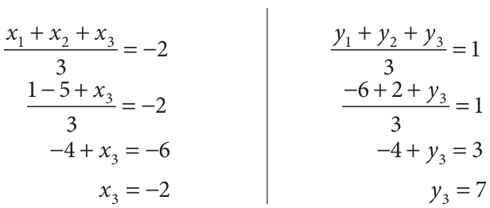
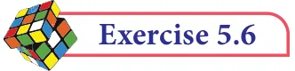

If the centroid of a triangle is at \(- 2 1,\) and two of its vertices are ( , - ) and \(- 5 2,\), then find the third vertex of the triangle. Solution Let the vertices of a triangle be ( , - ), \(- 5 2\) and , ) ( , ) Given the centroid of a triangle as \(- 2 1,\) we get,

Therefore, third vertex is \((-2, 7)\).
Thinking Corner
- Master gave a triangular plate with vertices A(5, 8), B(2, 4), C(8, 3) and a stick to a student. He wants to balance the plate on the stick. Can you help the boy to locate that point which can balance the plate.
- Which is the centre of gravity for this triangle? why? Fig. 5.42

- Find the centroid of the triangle whose vertices are
- \((2, -4)\), \((-3, -7)\) and (7,2) (ii) \((-5, -5)\), \((1, -4)\) and \((-4, -2)\)
- If the centroid of a triangle is at \((4, -2)\) and two of its vertices are \((3, -2)\) and (5,2) then find the third vertex of the triangle.
- Find the length of median through A of a triangle whose vertices are A\((-1, 3)\), B\((1, -1)\) and C(5,1).
- The vertices of a triangle are (1,2), (h, \(- 3)\) and \(- 4,k\). If the centroid of the triangle is at the point \((5, -1)\) then find the value of \(\sqrt{(h + k)^2 + (h + 3k)^2}\) .
- Orthocentre and centroid of a triangle are A\((-3, 5)\) and B(3,3) respectively. If C is the circumcentre and AC is the diameter of this circle, then find the radius of the circle.
- ABC is a triangle whose vertices are A(3,4 ), B\((-2, -1)\)and C(5 3 . If , ) G is the centroid and BDCG is a parallelogram then find the coordinates of the vertex D.
- If \(\frac{3}{2}\) 5, , 7 , \(\frac{ -\) 9}{2} and 13 2 , - 213 are mid-points of the sides of a triangle, then find
the centroid of the triangle.


Multiple Choice Questions
- If the y-coordinate of a point is zero, then the point always lies ______ (1)in the I quadrant (2) in the II quadrant (3)on x-axis (4) on y-axis
- The points \((-5, 2)\) and \((2, -5)\) lie in the ________ (1) same quadrant (2) II and III quadrant respectively (3) II and IV quadrant respectively (4) IV and II quadrant respectively
- On plotting the points O(0,0), A\((3, -4)\), B(3, 4) and C(0, 4) and joining OA, AB, BC and CO, which of the following figure is obtained? (1) Square (2) Rectangle (3) Trapezium (4) Rhombus
- If P\((-1, 1)\), Q( 3, \(- 4)\), R( 1, \(- 1)\), S\((-2, -3)\) and T\((-4, 4)\) are plotted on a graph paper, then the points in the fourth quadrant are __________ (1) P and T (2) Q and R (3) only S (4) P and Q
- The point whose ordinate is 4 and which lies on the y-axis is _______________ (1)( 4, 0 ) (2) (0, 4) (3) (1, 4) (4) (4, 2)
- The distance between the two points ( 2, 3 ) and ( 1, 4 ) is ______ (1) 2 (2) 56 (3) 10 (4) 2
- If the points A (2,0), B (-6,0), C (3, \(a - 3)\) lie on the x-axis then the value of a is _____ \((1) 0 (2) 2 (3) 3 (4) - 6\)
- If ( x+2, \(4) = (5\), \(y - 2)\), then the coordinates (x,y) are _____ (1) (7, 12) (2) (6, 3) (3) (3, 6) (4) (2, 1)
- If \(Q_1\), \(Q_2\), \(Q_3\), \(Q_4\) are the quadrants in a Cartesian plane then \(Q_2 \cap Q_3\) is ___________ (1) \(Q_1\), \(Q_2\) (2) \(Q_2\), \(Q_3\) (3) Null set (4) Negative x-axis.
- The distance between the point ( 5, \(- 1\) and the origin is _________
(1) 24 (2) 37 (3) 26 (4) 17